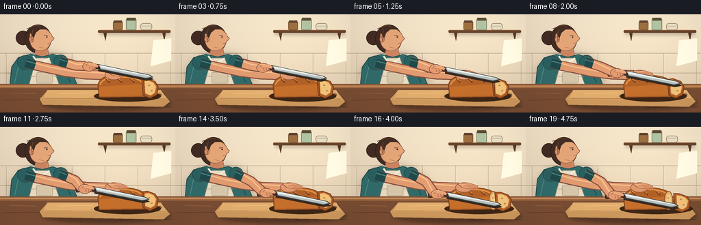
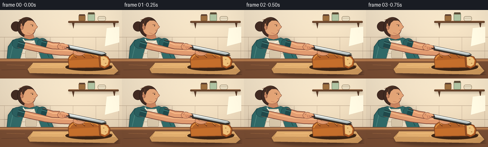

CODING AGENTS AS PIXEL WORLD MODELS
traex/GPT-5.6-Sol · motion_rationality_0017
点击播放 · 原生 RGB 像素
逐轮保存的候选
回放视频、检查图与代码变化。
每份候选均可单独播放。实际图片检查记录在下方工具轨迹中。
候选 01播放与检查图
点击播放 · 原生 RGB 像素


展开代码变化
--- 上一保存版本
+++ 本次保存版本
@@ -0,0 +1,357 @@
+from pathlib import Path
+import math
+import numpy as np
+from PIL import Image, ImageDraw, ImageFilter
+import artifact_io
+
+W, H, N, FPS = 256, 144, 20, 4.0
+S = 4
+ROOT = Path(__file__).resolve().parent
+
+
+def sc(v):
+ return int(round(v * S))
+
+
+def pts(seq):
+ return [(sc(x), sc(y)) for x, y in seq]
+
+
+def bezier(p0, p1, p2, p3, n=12):
+ out = []
+ for i in range(n + 1):
+ t = i / n
+ u = 1 - t
+ out.append((u**3*p0[0] + 3*u*u*t*p1[0] + 3*u*t*t*p2[0] + t**3*p3[0],
+ u**3*p0[1] + 3*u*u*t*p1[1] + 3*u*t*t*p2[1] + t**3*p3[1]))
+ return out
+
+
+class Painter:
+ def __init__(self, image):
+ self.im = image
+ self.d = ImageDraw.Draw(image, 'RGBA')
+
+ def polygon(self, xy, fill, outline=None, width=1):
+ self.d.polygon(pts(xy), fill=fill)
+ if outline:
+ self.d.line(pts(list(xy) + [xy[0]]), fill=outline, width=sc(width), joint='curve')
+
+ def ellipse(self, box, fill, outline=None, width=1):
+ b = tuple(sc(v) for v in box)
+ self.d.ellipse(b, fill=fill, outline=outline, width=sc(width) if outline else 1)
+
+ def rect(self, box, fill, outline=None, width=1):
+ b = tuple(sc(v) for v in box)
+ self.d.rectangle(b, fill=fill, outline=outline, width=sc(width) if outline else 1)
+
+ def rounded(self, box, radius, fill, outline=None, width=1):
+ b = tuple(sc(v) for v in box)
+ self.d.rounded_rectangle(b, radius=sc(radius), fill=fill, outline=outline,
+ width=sc(width) if outline else 1)
+
+ def line(self, xy, fill, width=1, joint='curve'):
+ self.d.line(pts(xy), fill=fill, width=sc(width), joint=joint)
+
+
+def shadow_layer(base, draw_fn, blur=3.0, opacity=120):
+ layer = Image.new('RGBA', base.size, (0, 0, 0, 0))
+ p = Painter(layer)
+ draw_fn(p, opacity)
+ layer = layer.filter(ImageFilter.GaussianBlur(sc(blur)))
+ base.alpha_composite(layer)
+
+
+def ease(x):
+ x = max(0.0, min(1.0, x))
+ return x*x*(3-2*x)
+
+
+def static_background():
+ hh, ww = H*S, W*S
+ yy, xx = np.mgrid[0:hh, 0:ww]
+ # Warm morning kitchen wall, brighter near the workspace.
+ y = yy / (hh - 1)
+ radial = np.exp(-(((xx/S-194)/105)**2 + ((yy/S-52)/78)**2))
+ top = np.array([239, 224, 198], dtype=float)
+ bottom = np.array([213, 193, 166], dtype=float)
+ arr = top[None, None, :]*(1-y[..., None]) + bottom[None, None, :]*y[..., None]
+ arr += radial[..., None] * np.array([10, 9, 6])
+ rng = np.random.default_rng(1701)
+ grain = rng.normal(0, 0.75, (hh, ww, 1))
+ arr += grain
+ arr = np.clip(arr, 0, 255).astype(np.uint8)
+ im = Image.fromarray(arr, 'RGB').convert('RGBA')
+ p = Painter(im)
+
+ # Quiet tiled backsplash and a shelf establish a kitchen without competing.
+ p.line([(0, 57), (256, 57)], (177, 156, 132, 46), 0.7)
+ p.line([(0, 86), (256, 86)], (177, 156, 132, 42), 0.7)
+ for x in (9, 57, 105, 153, 201, 249):
+ p.line([(x, 57), (x, 103)], (177, 156, 132, 34), 0.55)
+
+ # High shelf and simple crockery.
+ shadow_layer(im, lambda q, a: q.rounded((145, 26, 248, 30), 2, (54, 38, 29, 70)), 2.2)
+ p = Painter(im)
+ p.rounded((143, 23, 249, 27), 1.4, (102, 67, 43, 255))
+ p.line([(146, 23), (247, 23)], (180, 124, 79, 255), 0.8)
+ p.polygon([(151, 27), (156, 27), (154, 39)], (86, 57, 39, 255))
+ p.polygon([(237, 27), (242, 27), (240, 39)], (86, 57, 39, 255))
+ # jars
+ p.rounded((165, 10, 179, 23), 2, (155, 110, 63, 220), (104, 70, 42, 160), 0.7)
+ p.rect((166, 9, 178, 12), (92, 64, 48, 255))
+ p.rounded((184, 6, 199, 23), 2, (174, 194, 161, 220), (100, 107, 82, 150), 0.7)
+ p.rect((185, 5, 198, 9), (90, 75, 54, 255))
+ p.rounded((205, 13, 222, 23), 4, (231, 220, 194, 255), (134, 116, 89, 150), 0.7)
+ p.line([(206, 17), (221, 17)], (171, 148, 112, 120), 0.6)
+ # soft window-light strokes on wall
+ p.polygon([(224, 38), (250, 35), (250, 68), (220, 76)], (255, 249, 226, 24))
+ return im
+
+
+BG = static_background()
+
+
+def draw_person(im, frame, hx, hy, saw):
+ p = Painter(im)
+ breathe = 0.45 * math.sin(2*math.pi*(frame/(N-1))*0.75)
+
+ # Body shadow on wall.
+ shadow_layer(im, lambda q, a: q.ellipse((15, 55+breathe, 116, 130), (45, 31, 29, 45)), 5.5)
+ p = Painter(im)
+
+ # Back hair bun and hair mass.
+ p.ellipse((23, 24, 44, 45), (66, 43, 34, 255), (48, 31, 27, 220), 0.8)
+ p.ellipse((36, 15, 75, 57), (65, 43, 34, 255), (46, 31, 27, 240), 1.0)
+ p.line([(39, 21), (52, 16), (65, 18), (72, 27)], (112, 73, 50, 130), 1.1)
+
+ # Neck behind shirt.
+ p.polygon([(52, 49), (69, 48), (73, 67+breathe), (51, 68+breathe)],
+ (204, 139, 100, 255), (143, 87, 64, 130), 0.7)
+ p.ellipse((51, 48, 69, 63), (198, 130, 94, 255))
+
+ # Face in three-quarter profile, looking toward the knife.
+ face = bezier((45, 25), (47, 17), (67, 18), (73, 27), 8)
+ face += bezier((73, 27), (76, 29), (75, 33), (79, 35), 5)[1:]
+ face += bezier((79, 35), (77, 39), (74, 39), (73, 44), 6)[1:]
+ face += bezier((73, 44), (69, 54), (54, 57), (47, 48), 8)[1:]
+ face += bezier((47, 48), (42, 42), (42, 31), (45, 25), 7)[1:]
+ p.polygon(face, (224, 162, 117, 255), (137, 83, 62, 170), 0.8)
+ # ear, cheek, eye and focused brow
+ p.ellipse((42.2, 32, 49.5, 41), (214, 145, 106, 255), (143, 87, 63, 150), 0.65)
+ p.line([(45.5, 35), (48, 36), (46, 38)], (154, 91, 70, 130), 0.65)
+ p.line([(64, 30.5), (69.5, 30.8)], (90, 57, 45, 230), 1.05)
+ p.ellipse((67.2, 32.2, 69.2, 34.1), (45, 38, 33, 255))
+ p.line([(69.6, 42.5), (73.5, 42.0)], (146, 75, 66, 205), 0.8)
+ p.line([(57, 48), (64, 49.5)], (177, 94, 74, 110), 0.75)
+ # Hairline / loose lock.
+ p.polygon([(43, 25), (48, 18), (64, 17), (70, 22), (58, 22), (52, 27), (49, 35)],
+ (67, 44, 34, 255))
+ p.line([(48, 22), (46, 31), (47, 40)], (117, 75, 51, 180), 0.8)
+
+ # Shirt and apron silhouette behind the counter.
+ shirt = [(27, 63+breathe), (45, 58+breathe), (62, 62+breathe), (77, 58+breathe),
+ (96, 65+breathe), (112, 102), (14, 108), (17, 77+breathe)]
+ p.polygon(shirt, (48, 105, 103, 255), (32, 67, 70, 220), 1.1)
+ p.line([(29, 66+breathe), (21, 101)], (83, 139, 132, 120), 1.1)
+ p.line([(86, 64+breathe), (103, 100)], (26, 67, 68, 110), 1.0)
+ # Apron panel and straps.
+ p.polygon([(53, 64), (72, 64), (88, 108), (41, 108)], (228, 215, 190, 255), (151, 139, 119, 170), 0.8)
+ p.line([(48, 61), (58, 74), (72, 64)], (242, 231, 208, 255), 2.5)
+ p.line([(44, 91), (84, 91)], (173, 152, 126, 150), 0.8)
+ p.rounded((53, 85, 77, 101), 2, (211, 194, 166, 150), (152, 135, 110, 100), 0.6)
+
+ # Shoulder caps (arms themselves are drawn later, over the counter/board).
+ p.ellipse((25, 60+breathe, 49, 81+breathe), (42, 94, 94, 255), (31, 67, 69, 180), 0.8)
+ p.ellipse((78, 59+breathe, 99, 78+breathe), (42, 94, 94, 255), (31, 67, 69, 180), 0.8)
+
+
+def draw_counter(im):
+ p = Painter(im)
+ # Counter back edge and warm wooden front.
+ p.polygon([(0, 102), (256, 102), (256, 144), (0, 144)], (119, 76, 50, 255))
+ p.rect((0, 103, 256, 108), (160, 105, 66, 255))
+ p.line([(0, 105), (256, 105)], (216, 157, 100, 150), 1.0)
+ # restrained wood grain
+ p.line([(3, 126), (49, 125), (82, 128), (134, 126)], (80, 50, 38, 70), 0.7)
+ p.line([(175, 137), (222, 135), (252, 136)], (77, 48, 35, 60), 0.7)
+ p.line([(14, 115), (52, 116)], (210, 143, 87, 50), 0.55)
+ # Board cast shadow.
+ shadow_layer(im, lambda q, a: q.ellipse((60, 120, 250, 141), (34, 20, 14, 105)), 2.5)
+ p = Painter(im)
+ p.polygon([(69, 111), (235, 111), (249, 128), (239, 136), (62, 133), (57, 124)],
+ (202, 150, 91, 255), (103, 66, 43, 230), 1.0)
+ p.polygon([(69, 111), (235, 111), (244, 125), (63, 124)], (222, 171, 108, 255))
+ p.line([(65, 123), (242, 124)], (141, 91, 55, 155), 0.7)
+ p.line([(85, 116), (135, 115)], (244, 200, 137, 115), 0.7)
+ p.ellipse((229, 116, 236, 120), (132, 85, 53, 180))
+
+
+def draw_back_arm(im, frame):
+ p = Painter(im)
+ breathe = 0.45 * math.sin(2*math.pi*(frame/(N-1))*0.75)
+ # Non-knife arm reaches around, keeping the hand safely left of the cut.
+ arm = [(39, 72+breathe), (66, 78), (94, 84), (126, 88), (158, 89)]
+ p.line(arm, (132, 78, 62, 150), 15.0)
+ p.line(arm, (219, 151, 109, 255), 12.3)
+ p.line([(43, 69+breathe), (72, 77), (105, 83), (153, 86)], (241, 184, 135, 85), 2.0)
+ # sleeve cuff
+ p.line([(37, 71+breathe), (51, 75)], (32, 72, 74, 255), 14)
+ p.line([(38, 68+breathe), (52, 72)], (75, 133, 127, 180), 1.4)
+
+
+def loaf_shape(p, split, frame):
+ # Shadow under loaf, plus crumbs that stay on the board.
+ p.ellipse((137, 112, 235 + split, 128), (61, 37, 20, 90))
+
+ main_top = bezier((143, 105), (144, 91), (159, 88), (177, 89), 9)
+ main_top += bezier((177, 89), (194, 89), (208, 92), (213, 100), 8)[1:]
+ main = main_top + [(213, 121), (145, 122)]
+ p.polygon(main, (174, 95, 39, 255), (112, 59, 29, 255), 1.0)
+ # golden crust highlight
+ hi = bezier((146, 103), (150, 93), (163, 91), (177, 92), 8)
+ hi += bezier((177, 92), (193, 91), (204, 95), (209, 101), 7)[1:]
+ p.line(hi, (224, 145, 65, 220), 2.1)
+ p.polygon([(145, 106), (211, 102), (211, 119), (145, 120)], (194, 109, 43, 105))
+ # baked scoring marks
+ for x in (158, 176, 194):
+ p.line([(x-4, 94), (x+2, 100)], (117, 59, 28, 210), 2.1)
+ p.line([(x-3.5, 93.5), (x+1, 97.5)], (235, 162, 79, 165), 0.8)
+ # Exposed cut face becomes visible as the final slice travels away.
+ if split > 1.0:
+ p.ellipse((202, 94, 215, 122), (220, 171, 105, 255), (139, 74, 34, 255), 1.0)
+ p.ellipse((205, 98, 212.5, 118.5), (239, 198, 131, 255))
+ p.ellipse((207, 103, 209, 105), (184, 130, 76, 170))
+ p.ellipse((208.5, 112, 211, 114), (184, 130, 76, 140))
+
+ # End slice: initially attached, later translating and tipping slightly down/right.
+ sx = split
+ sy = 0.24 * split
+ tilt = 0.17 * split
+ outer = [(207+sx, 95+sy), (215+sx, 94+sy+tilt), (226+sx, 98+sy+tilt),
+ (231+sx, 106+sy), (229+sx, 118+sy), (219+sx, 123+sy),
+ (209+sx, 119+sy)]
+ p.polygon(outer, (174, 91, 37, 255), (105, 55, 27, 255), 1.0)
+ inner = [(211+sx, 98+sy), (217+sx, 97+sy+tilt), (224+sx, 100+sy+tilt),
+ (228+sx, 106+sy), (226+sx, 115+sy), (220+sx, 119+sy),
+ (212+sx, 116+sy)]
+ p.polygon(inner, (239, 193, 122, 255), (212, 143, 72, 220), 0.8)
+ p.ellipse((216+sx, 103+sy, 219+sx, 105+sy), (191, 134, 75, 135))
+ p.ellipse((220+sx, 111+sy, 223+sx, 113+sy), (191, 134, 75, 120))
+ # seam/cut guide remains subtle, not a drawn motion cue
+ if split < 1.0:
+ p.line([(209.5, 96), (210.5, 119)], (116, 61, 29, 165), 0.9)
+
+ # a few static crumbs, joined by two fresh crumbs at completion
+ crumbs = [(133, 121, 1.1), (238, 127, 1.0), (112, 128, 0.9)]
+ if split > 3:
+ crumbs += [(218+split*.35, 129, 1.2), (229+split*.25, 126, .8)]
+ for x, y, r in crumbs:
+ p.ellipse((x-r, y-r*.55, x+r, y+r*.55), (217, 146, 67, 230))
+
+
+def draw_steadying_hand(im, frame):
+ p = Painter(im)
+ # Palm rests over left side of loaf; fingers curve down its near side.
+ p.ellipse((153, 81.5, 179, 96), (218, 148, 106, 255), (133, 78, 59, 180), 0.75)
+ p.polygon([(157, 84), (172, 82), (185, 86), (186, 90), (175, 91), (163, 89)],
+ (225, 158, 113, 255), (140, 82, 61, 160), 0.7)
+ for j in range(4):
+ x = 172 + j*3.5
+ y = 87.0 + (j%2)*0.4
+ p.line([(x-7, y-2.1), (x, y), (x+3, y+3.0)], (211, 137, 99, 255), 2.3)
+ p.line([(x+2.0, y+2.2), (x+3.2, y+2.6)], (156, 89, 68, 150), 0.55)
+ p.line([(158, 83.5), (169, 84)], (245, 190, 143, 110), 1.0)
+
+
+def knife_geometry(hx, hy):
+ # knife axis slopes gently down toward its tip
+ return {
+ 'handle': [(hx-20, hy-6), (hx+8, hy-2.5), (hx+11, hy+3.5), (hx-18, hy+5.5)],
+ 'blade': [(hx+7, hy-3.0), (hx+83, hy+12.8), (hx+88, hy+16.0),
+ (hx+78, hy+18.0), (hx+7, hy+4.0)]
+ }
+
+
+def draw_knife_and_arm(im, frame, hx, hy, saw, depth):
+ p = Painter(im)
+ geo = knife_geometry(hx, hy)
+ # Knife shadow tracks the real tool, faintly projected on bread/board.
+ p.polygon([(x+1.2, y+3.2) for x, y in geo['blade']], (53, 40, 31, 55))
+ # Blade outline, steel, cutting edge and highlight.
+ p.polygon(geo['blade'], (180, 189, 188, 255), (55, 62, 62, 255), 1.0)
+ p.polygon([(hx+11, hy-1.7), (hx+82, hy+13.2), (hx+85, hy+15), (hx+12, hy+1.8)],
+ (224, 230, 226, 245))
+ p.line([(hx+9, hy+3.5), (hx+78, hy+17.4), (hx+86, hy+15.8)], (79, 84, 82, 230), 0.8)
+ p.line([(hx+17, hy-0.1), (hx+66, hy+10.1)], (255, 255, 246, 175), 0.75)
+ # Dark wooden handle with rivets.
+ p.polygon(geo['handle'], (67, 47, 39, 255), (39, 31, 29, 255), 1.0)
+ p.line([(hx-16, hy-3.0), (hx+4, hy)], (131, 89, 59, 210), 1.2)
+ p.ellipse((hx-11, hy-2.5, hx-8.7, hy-0.2), (204, 190, 158, 255))
+ p.ellipse((hx-1.5, hy-1.1, hx+0.8, hy+1.2), (204, 190, 158, 255))
+
+ # Knife arm: elbow and wrist follow the descending/sawing handle as one unit.
+ breathe = 0.45 * math.sin(2*math.pi*(frame/(N-1))*0.75)
+ shoulder = (88, 69+breathe)
+ elbow = (110 + saw*0.10, 75 + depth*0.22)
+ wrist = (hx-10, hy-0.5)
+ arm = [shoulder, elbow, wrist]
+ p.line(arm, (132, 78, 61, 170), 15.0)
+ p.line(arm, (221, 153, 110, 255), 12.1)
+ p.line([(92, 66+breathe), (111, 73+depth*.20), (hx-12, hy-3)], (245, 188, 140, 85), 1.7)
+ # shirt cuff at shoulder end
+ p.line([(87, 69+breathe), (98, 72+depth*.08)], (31, 72, 73, 255), 13.2)
+ p.line([(87, 66+breathe), (98, 69+depth*.08)], (76, 132, 126, 160), 1.2)
+ # Gripping hand wraps around handle; thumb is visibly on top.
+ p.ellipse((hx-15, hy-6.5, hx+4, hy+7.5), (221, 151, 108, 255), (127, 73, 57, 190), 0.8)
+ p.polygon([(hx-5, hy-6), (hx+4, hy-4), (hx+9, hy-1), (hx+7, hy+2),
+ (hx-2, hy), (hx-10, hy-1)], (229, 161, 116, 255), (139, 80, 59, 150), 0.6)
+ # curled fingers beneath handle
+ for j in range(3):
+ x = hx - 5 + j*4.0
+ p.line([(x, hy+1), (x+1.5, hy+5.0)], (185, 112, 84, 210), 1.25)
+ p.line([(hx-11, hy-4), (hx-3, hy-5.2)], (247, 192, 147, 120), 1.0)
+
+
+def render(frame):
+ im = BG.copy()
+ # Motion: three controlled sawing cycles while pressure steadily lowers blade.
+ u = frame / (N - 1)
+ downward = ease(u)
+ saw_amp = 5.1 * (1.0 - 0.20*downward)
+ saw = saw_amp * math.sin(2*math.pi*(3.0*u + 0.04))
+ depth = 24.0 * downward
+ hx = 134.0 + saw
+ hy = 76.0 + depth + 0.35*math.sin(2*math.pi*3.0*u)
+ split = 9.0 * ease((u - 0.72) / 0.28)
+
+ draw_person(im, frame, hx, hy, saw)
+ draw_counter(im)
+ draw_back_arm(im, frame)
+ p = Painter(im)
+ loaf_shape(p, split, frame)
+ draw_steadying_hand(im, frame)
+ draw_knife_and_arm(im, frame, hx, hy, saw, depth)
+
+ # Warm directional light and restrained vignette integrate all layers.
+ arr = np.asarray(im.convert('RGB'), dtype=np.float32)
+ yy, xx = np.mgrid[0:H*S, 0:W*S]
+ vign = ((xx-W*S*.52)/(W*S*.76))**2 + ((yy-H*S*.47)/(H*S*.90))**2
+ arr *= np.clip(1.035 - 0.105*vign[..., None], 0.87, 1.04)
+ # consistent fine grain, fixed in screen space: no temporal flicker
+ rng = np.random.default_rng(990)
+ arr += rng.normal(0, 0.35, arr.shape[:2])[..., None]
+ arr = np.clip(arr, 0, 255).astype(np.uint8)
+ out = Image.fromarray(arr, 'RGB').resize((W, H), Image.Resampling.LANCZOS)
+ return np.asarray(out, dtype=np.uint8)
+
+
+def main():
+ frames = np.stack([render(i) for i in range(N)], axis=0)
+ assert frames.shape == (N, H, W, 3) and frames.dtype == np.uint8
+ artifact_io.save(frames, ROOT)
+ print(f"saved {N} RGB frames at {W}x{H}, {FPS:g} fps")
+
+
+if __name__ == '__main__':
+ main()
可观测工具轨迹
实际执行的命令与返回图片。
命令 1exit 0
/bin/bash -lc "cat prompt.txt && printf '\\n--- GENERATION_RULES.md ---\\n' && cat GENERATION_RULES.md && printf '\\n--- task_spec.json ---\\n' && cat task_spec.json"
命令 2exit 1
/bin/bash -lc "find . -maxdepth 2 -type f -printf '%p\\n' | sort && printf '\\n--- available binaries ---\\n' && command -v ffmpeg && command -v python3 && python3 - <<'PY' mods=['PIL','numpy','cv2','imageio','moviepy','cairo'] for m in mods: try: x=__import__(m); print(m,'OK',getattr(x,'__version__','')) except Exception as e: print(m,'NO',e) PY"
命令 3exit 0
/bin/bash -lc 'cat artifact_io.py'
命令 4exit 0
/bin/bash -lc 'for b in ffmpeg python3 convert magick; do printf "$b: "; command -v "$b" || true; done python3 - <<'"'PY' mods=['PIL','numpy','cv2','imageio','moviepy','cairo'] for m in mods: try: x=__import__(m); print(m,'OK',getattr(x,'__version__','')) except Exception as e: print(m,'NO',e) PY"
命令 5exit 0
/bin/bash -lc "cat > generate.py <<'PY'
from pathlib import Path
import math
import numpy as np
from PIL import Image, ImageDraw, ImageFilter
import artifact_io
W, H, N, FPS = 256, 144, 20, 4.0
S = 4
ROOT = Path(__file__).resolve().parent
def sc(v):
return int(round(v * S))
def pts(seq):
return [(sc(x), sc(y)) for x, y in seq]
def bezier(p0, p1, p2, p3, n=12):
out = []
for i in range(n + 1):
t = i / n
u = 1 - t
out.append((u**3*p0[0] + 3*u*u*t*p1[0] + 3*u*t*t*p2[0] + t**3*p3[0],
u**3*p0[1] + 3*u*u*t*p1[1] + 3*u*t*t*p2[1] + t**3*p3[1]))
return out
class Painter:
def __init__(self, image):
self.im = image
self.d = ImageDraw.Draw(image, 'RGBA')
def polygon(self, xy, fill, outline=None, width=1):
self.d.polygon(pts(xy), fill=fill)
if outline:
self.d.line(pts(list(xy) + [xy[0]]), fill=outline, width=sc(width), joint='curve')
def ellipse(self, box, fill, outline=None, width=1):
b = tuple(sc(v) for v in box)
self.d.ellipse(b, fill=fill, outline=outline, width=sc(width) if outline else 1)
def rect(self, box, fill, outline=None, width=1):
b = tuple(sc(v) for v in box)
self.d.rectangle(b, fill=fill, outline=outline, width=sc(width) if outline else 1)
def rounded(self, box, radius, fill, outline=None, width=1):
b = tuple(sc(v) for v in box)
self.d.rounded_rectangle(b, radius=sc(radius), fill=fill, outline=outline,
width=sc(width) if outline else 1)
def line(self, xy, fill, width=1, joint='curve'):
self.d.line(pts(xy), fill=fill, width=sc(width), joint=joint)
def shadow_layer(base, draw_fn, blur=3.0, opacity=120):
layer = Image.new('RGBA', base.size, (0, 0, 0, 0))
p = Painter(layer)
draw_fn(p, opacity)
layer = layer.filter(ImageFilter.GaussianBlur(sc(blur)))
base.alpha_composite(layer)
def ease(x):
x = max(0.0, min(1.0, x))
return x*x*(3-2*x)
def static_background():
hh, ww = H*S, W*S
yy, xx = np.mgrid[0:hh, 0:ww]
# Warm morning kitchen wall, brighter near the workspace.
y = yy / (hh - 1)
radial = np.exp(-(((xx/S-194)/105)**2 + ((yy/S-52)/78)**2))
top = np.array([239, 224, 198], dtype=float)
bottom = np.array([213, 193, 166], dtype=float)
arr = top[None, None, :]*(1-y[..., None]) + bottom[None, None, :]*y[..., None]
arr += radial[..., None] * np.array([10, 9, 6])
rng = np.random.default_rng(1701)
grain = rng.normal(0, 0.75, (hh, ww, 1))
arr += grain
arr = np.clip(arr, 0, 255).astype(np.uint8)
im = Image.fromarray(arr, 'RGB').convert('RGBA')
p = Painter(im)
# Quiet tiled backsplash and a shelf establish a kitchen without competing.
p.line([(0, 57), (256, 57)], (177, 156, 132, 46), 0.7)
p.line([(0, 86), (256, 86)], (177, 156, 132, 42), 0.7)
for x in (9, 57, 105, 153, 201, 249):
p.line([(x, 57), (x, 103)], (177, 156, 132, 34), 0.55)
# High shelf and simple crockery.
shadow_layer(im, lambda q, a: q.rounded((145, 26, 248, 30), 2, (54, 38, 29, 70)), 2.2)
p = Painter(im)
p.rounded((143, 23, 249, 27), 1.4, (102, 67, 43, 255))
p.line([(146, 23), (247, 23)], (180, 124, 79, 255), 0.8)
p.polygon([(151, 27), (156, 27), (154, 39)], (86, 57, 39, 255))
p.polygon([(237, 27), (242, 27), (240, 39)], (86, 57, 39, 255))
# jars
p.rounded((165, 10, 179, 23), 2, (155, 110, 63, 220), (104, 70, 42, 160), 0.7)
p.rect((166, 9, 178, 12), (92, 64, 48, 255))
p.rounded((184, 6, 199, 23), 2, (174, 194, 161, 220), (100, 107, 82, 150), 0.7)
p.rect((185, 5, 198, 9), (90, 75, 54, 255))
p.rounded((205, 13, 222, 23), 4, (231, 220, 194, 255), (134, 116, 89, 150), 0.7)
p.line([(206, 17), (221, 17)], (171, 148, 112, 120), 0.6)
# soft window-light strokes on wall
p.polygon([(224, 38), (250, 35), (250, 68), (220, 76)], (255, 249, 226, 24))
return im
BG = static_background()
def draw_person(im, frame, hx, hy, saw):
p = Painter(im)
breathe = 0.45 * math.sin(2*math.pi*(frame/(N-1))*0.75)
# Body shadow on wall.
shadow_layer(im, lambda q, a: q.ellipse((15, 55+breathe, 116, 130), (45, 31, 29, 45)), 5.5)
p = Painter(im)
# Back hair bun and hair mass.
p.ellipse((23, 24, 44, 45), (66, 43, 34, 255), (48, 31, 27, 220), 0.8)
p.ellipse((36, 15, 75, 57), (65, 43, 34, 255), (46, 31, 27, 240), 1.0)
p.line([(39, 21), (52, 16), (65, 18), (72, 27)], (112, 73, 50, 130), 1.1)
# Neck behind shirt.
p.polygon([(52, 49), (69, 48), (73, 67+breathe), (51, 68+breathe)],
(204, 139, 100, 255), (143, 87, 64, 130), 0.7)
p.ellipse((51, 48, 69, 63), (198, 130, 94, 255))
# Face in three-quarter profile, looking toward the knife.
face = bezier((45, 25), (47, 17), (67, 18), (73, 27), 8)
face += bezier((73, 27), (76, 29), (75, 33), (79, 35), 5)[1:]
face += bezier((79, 35), (77, 39), (74, 39), (73, 44), 6)[1:]
face += bezier((73, 44), (69, 54), (54, 57), (47, 48), 8)[1:]
face += bezier((47, 48), (42, 42), (42, 31), (45, 25), 7)[1:]
p.polygon(face, (224, 162, 117, 255), (137, 83, 62, 170), 0.8)
# ear, cheek, eye and focused brow
p.ellipse((42.2, 32, 49.5, 41), (214, 145, 106, 255), (143, 87, 63, 150), 0.65)
p.line([(45.5, 35), (48, 36), (46, 38)], (154, 91, 70, 130), 0.65)
p.line([(64, 30.5), (69.5, 30.8)], (90, 57, 45, 230), 1.05)
p.ellipse((67.2, 32.2, 69.2, 34.1), (45, 38, 33, 255))
p.line([(69.6, 42.5), (73.5, 42.0)], (146, 75, 66, 205), 0.8)
p.line([(57, 48), (64, 49.5)], (177, 94, 74, 110), 0.75)
# Hairline / loose lock.
p.polygon([(43, 25), (48, 18), (64, 17), (70, 22), (58, 22), (52, 27), (49, 35)],
(67, 44, 34, 255))
p.line([(48, 22), (46, 31), (47, 40)], (117, 75, 51, 180), 0.8)
# Shirt and apron silhouette behind the counter.
shirt = [(27, 63+breathe), (45, 58+breathe), (62, 62+breathe), (77, 58+breathe),
(96, 65+breathe), (112, 102), (14, 108), (17, 77+breathe)]
p.polygon(shirt, (48, 105, 103, 255), (32, 67, 70, 220), 1.1)
p.line([(29, 66+breathe), (21, 101)], (83, 139, 132, 120), 1.1)
p.line([(86, 64+breathe), (103, 100)], (26, 67, 68, 110), 1.0)
# Apron panel and straps.
p.polygon([(53, 64), (72, 64), (88, 108), (41, 108)], (228, 215, 190, 255), (151, 139, 119, 170), 0.8)
p.line([(48, 61), (58, 74), (72, 64)], (242, 231, 208, 255), 2.5)
p.line([(44, 91), (84, 91)], (173, 152, 126, 150), 0.8)
p.rounded((53, 85, 77, 101), 2, (211, 194, 166, 150), (152, 135, 110, 100), 0.6)
# Shoulder caps (arms themselves are drawn later, over the counter/board).
p.ellipse((25, 60+breathe, 49, 81+breathe), (42, 94, 94, 255), (31, 67, 69, 180), 0.8)
p.ellipse((78, 59+breathe, 99, 78+breathe), (42, 94, 94, 255), (31, 67, 69, 180), 0.8)
def draw_counter(im):
p = Painter(im)
# Counter back edge and warm wooden front.
p.polygon([(0, 102), (256, 102), (256, 144), (0, 144)], (119, 76, 50, 255))
p.rect((0, 103, 256, 108), (160, 105, 66, 255))
p.line([(0, 105), (256, 105)], (216, 157, 100, 150), 1.0)
# restrained wood grain
p.line([(3, 126), (49, 125), (82, 128), (134, 126)], (80, 50, 38, 70), 0.7)
p.line([(175, 137), (222, 135), (252, 136)], (77, 48, 35, 60), 0.7)
p.line([(14, 115), (52, 116)], (210, 143, 87, 50), 0.55)
# Board cast shadow.
shadow_layer(im, lambda q, a: q.ellipse((60, 120, 250, 141), (34, 20, 14, 105)), 2.5)
p = Painter(im)
p.polygon([(69, 111), (235, 111), (249, 128), (239, 136), (62, 133), (57, 124)],
(202, 150, 91, 255), (103, 66, 43, 230), 1.0)
p.polygon([(69, 111), (235, 111), (244, 125), (63, 124)], (222, 171, 108, 255))
p.line([(65, 123), (242, 124)], (141, 91, 55, 155), 0.7)
p.line([(85, 116), (135, 115)], (244, 200, 137, 115), 0.7)
p.ellipse((229, 116, 236, 120), (132, 85, 53, 180))
def draw_back_arm(im, frame):
p = Painter(im)
breathe = 0.45 * math.sin(2*math.pi*(frame/(N-1))*0.75)
# Non-knife arm reaches around, keeping the hand safely left of the cut.
arm = [(39, 72+breathe), (66, 78), (94, 84), (126, 88), (158, 89)]
p.line(arm, (132, 78, 62, 150), 15.0)
p.line(arm, (219, 151, 109, 255), 12.3)
p.line([(43, 69+breathe), (72, 77), (105, 83), (153, 86)], (241, 184, 135, 85), 2.0)
# sleeve cuff
p.line([(37, 71+breathe), (51, 75)], (32, 72, 74, 255), 14)
p.line([(38, 68+breathe), (52, 72)], (75, 133, 127, 180), 1.4)
def loaf_shape(p, split, frame):
# Shadow under loaf, plus crumbs that stay on the board.
p.ellipse((137, 112, 235 + split, 128), (61, 37, 20, 90))
main_top = bezier((143, 105), (144, 91), (159, 88), (177, 89), 9)
main_top += bezier((177, 89), (194, 89), (208, 92), (213, 100), 8)[1:]
main = main_top + [(213, 121), (145, 122)]
p.polygon(main, (174, 95, 39, 255), (112, 59, 29, 255), 1.0)
# golden crust highlight
hi = bezier((146, 103), (150, 93), (163, 91), (177, 92), 8)
hi += bezier((177, 92), (193, 91), (204, 95), (209, 101), 7)[1:]
p.line(hi, (224, 145, 65, 220), 2.1)
p.polygon([(145, 106), (211, 102), (211, 119), (145, 120)], (194, 109, 43, 105))
# baked scoring marks
for x in (158, 176, 194):
p.line([(x-4, 94), (x+2, 100)], (117, 59, 28, 210), 2.1)
p.line([(x-3.5, 93.5), (x+1, 97.5)], (235, 162, 79, 165), 0.8)
# Exposed cut face becomes visible as the final slice travels away.
if split > 1.0:
p.ellipse((202, 94, 215, 122), (220, 171, 105, 255), (139, 74, 34, 255), 1.0)
p.ellipse((205, 98, 212.5, 118.5), (239, 198, 131, 255))
p.ellipse((207, 103, 209, 105), (184, 130, 76, 170))
p.ellipse((208.5, 112, 211, 114), (184, 130, 76, 140))
# End slice: initially attached, later translating and tipping slightly down/right.
sx = split
sy = 0.24 * split
tilt = 0.17 * split
outer = [(207+sx, 95+sy), (215+sx, 94+sy+tilt), (226+sx, 98+sy+tilt),
(231+sx, 106+sy), (229+sx, 118+sy), (219+sx, 123+sy),
(209+sx, 119+sy)]
p.polygon(outer, (174, 91, 37, 255), (105, 55, 27, 255), 1.0)
inner = [(211+sx, 98+sy), (217+sx, 97+sy+tilt), (224+sx, 100+sy+tilt),
(228+sx, 106+sy), (226+sx, 115+sy), (220+sx, 119+sy),
(212+sx, 116+sy)]
p.polygon(inner, (239, 193, 122, 255), (212, 143, 72, 220), 0.8)
p.ellipse((216+sx, 103+sy, 219+sx, 105+sy), (191, 134, 75, 135))
p.ellipse((220+sx, 111+sy, 223+sx, 113+sy), (191, 134, 75, 120))
# seam/cut guide remains subtle, not a drawn motion cue
if split < 1.0:
p.line([(209.5, 96), (210.5, 119)], (116, 61, 29, 165), 0.9)
# a few static crumbs, joined by two fresh crumbs at completion
crumbs = [(133, 121, 1.1), (238, 127, 1.0), (112, 128, 0.9)]
if split > 3:
crumbs += [(218+split*.35, 129, 1.2), (229+split*.25, 126, .8)]
for x, y, r in crumbs:
p.ellipse((x-r, y-r*.55, x+r, y+r*.55), (217, 146, 67, 230))
def draw_steadying_hand(im, frame):
p = Painter(im)
# Palm rests over left side of loaf; fingers curve down its near side.
p.ellipse((153, 81.5, 179, 96), (218, 148, 106, 255), (133, 78, 59, 180), 0.75)
p.polygon([(157, 84), (172, 82), (185, 86), (186, 90), (175, 91), (163, 89)],
(225, 158, 113, 255), (140, 82, 61, 160), 0.7)
for j in range(4):
x = 172 + j*3.5
y = 87.0 + (j%2)*0.4
p.line([(x-7, y-2.1), (x, y), (x+3, y+3.0)], (211, 137, 99, 255), 2.3)
p.line([(x+2.0, y+2.2), (x+3.2, y+2.6)], (156, 89, 68, 150), 0.55)
p.line([(158, 83.5), (169, 84)], (245, 190, 143, 110), 1.0)
def knife_geometry(hx, hy):
# knife axis slopes gently down toward its tip
return {
'handle': [(hx-20, hy-6), (hx+8, hy-2.5), (hx+11, hy+3.5), (hx-18, hy+5.5)],
'blade': [(hx+7, hy-3.0), (hx+83, hy+12.8), (hx+88, hy+16.0),
(hx+78, hy+18.0), (hx+7, hy+4.0)]
}
def draw_knife_and_arm(im, frame, hx, hy, saw, depth):
p = Painter(im)
geo = knife_geometry(hx, hy)
# Knife shadow tracks the real tool, faintly projected on bread/board.
p.polygon([(x+1.2, y+3.2) for x, y in geo['blade']], (53, 40, 31, 55))
# Blade outline, steel, cutting edge and highlight.
p.polygon(geo['blade'], (180, 189, 188, 255), (55, 62, 62, 255), 1.0)
p.polygon([(hx+11, hy-1.7), (hx+82, hy+13.2), (hx+85, hy+15), (hx+12, hy+1.8)],
(224, 230, 226, 245))
p.line([(hx+9, hy+3.5), (hx+78, hy+17.4), (hx+86, hy+15.8)], (79, 84, 82, 230), 0.8)
p.line([(hx+17, hy-0.1), (hx+66, hy+10.1)], (255, 255, 246, 175), 0.75)
# Dark wooden handle with rivets.
p.polygon(geo['handle'], (67, 47, 39, 255), (39, 31, 29, 255), 1.0)
p.line([(hx-16, hy-3.0), (hx+4, hy)], (131, 89, 59, 210), 1.2)
p.ellipse((hx-11, hy-2.5, hx-8.7, hy-0.2), (204, 190, 158, 255))
p.ellipse((hx-1.5, hy-1.1, hx+0.8, hy+1.2), (204, 190, 158, 255))
# Knife arm: elbow and wrist follow the descending/sawing handle as one unit.
breathe = 0.45 * math.sin(2*math.pi*(frame/(N-1))*0.75)
shoulder = (88, 69+breathe)
elbow = (110 + saw*0.10, 75 + depth*0.22)
wrist = (hx-10, hy-0.5)
arm = [shoulder, elbow, wrist]
p.line(arm, (132, 78, 61, 170), 15.0)
p.line(arm, (221, 153, 110, 255), 12.1)
p.line([(92, 66+breathe), (111, 73+depth*.20), (hx-12, hy-3)], (245, 188, 140, 85), 1.7)
# shirt cuff at shoulder end
p.line([(87, 69+breathe), (98, 72+depth*.08)], (31, 72, 73, 255), 13.2)
p.line([(87, 66+breathe), (98, 69+depth*.08)], (76, 132, 126, 160), 1.2)
# Gripping hand wraps around handle; thumb is visibly on top.
p.ellipse((hx-15, hy-6.5, hx+4, hy+7.5), (221, 151, 108, 255), (127, 73, 57, 190), 0.8)
p.polygon([(hx-5, hy-6), (hx+4, hy-4), (hx+9, hy-1), (hx+7, hy+2),
(hx-2, hy), (hx-10, hy-1)], (229, 161, 116, 255), (139, 80, 59, 150), 0.6)
# curled fingers beneath handle
for j in range(3):
x = hx - 5 + j*4.0
p.line([(x, hy+1), (x+1.5, hy+5.0)], (185, 112, 84, 210), 1.25)
p.line([(hx-11, hy-4), (hx-3, hy-5.2)], (247, 192, 147, 120), 1.0)
def render(frame):
im = BG.copy()
# Motion: three controlled sawing cycles while pressure steadily lowers blade.
u = frame / (N - 1)
downward = ease(u)
saw_amp = 5.1 * (1.0 - 0.20*downward)
saw = saw_amp * math.sin(2*math.pi*(3.0*u + 0.04))
depth = 24.0 * downward
hx = 134.0 + saw
hy = 76.0 + depth + 0.35*math.sin(2*math.pi*3.0*u)
split = 9.0 * ease((u - 0.72) / 0.28)
draw_person(im, frame, hx, hy, saw)
draw_counter(im)
draw_back_arm(im, frame)
p = Painter(im)
loaf_shape(p, split, frame)
draw_steadying_hand(im, frame)
draw_knife_and_arm(im, frame, hx, hy, saw, depth)
# Warm directional light and restrained vignette integrate all layers.
arr = np.asarray(im.convert('RGB'), dtype=np.float32)
yy, xx = np.mgrid[0:H*S, 0:W*S]
vign = ((xx-W*S*.52)/(W*S*.76))**2 + ((yy-H*S*.47)/(H*S*.90))**2
arr *= np.clip(1.035 - 0.105*vign[..., None], 0.87, 1.04)
# consistent fine grain, fixed in screen space: no temporal flicker
rng = np.random.default_rng(990)
arr += rng.normal(0, 0.35, arr.shape[:2])[..., None]
arr = np.clip(arr, 0, 255).astype(np.uint8)
out = Image.fromarray(arr, 'RGB').resize((W, H), Image.Resampling.LANCZOS)
return np.asarray(out, dtype=np.uint8)
def main():
frames = np.stack([render(i) for i in range(N)], axis=0)
assert frames.shape == (N, H, W, 3) and frames.dtype == np.uint8
artifact_io.save(frames, ROOT)
print(f\"saved {N} RGB frames at {W}x{H}, {FPS:g} fps\")
if __name__ == '__main__':
main()
PY
python3 generate.py
ls -lh pixels.npz inspection.png transition_check.png index.html frames/00.png frames/19.png"命令 6exit 0
/bin/bash -lc 'python3 -m py_compile generate.py artifact_io.py && test -s index.html && test -s inspection.png && test -s transition_check.png && test $(find frames -maxdepth 1 -name '"'*.png' | wc -l) -eq 20 && printf 'generator compiles; all required artifacts present\\n' && du -sh ."
命令 7exit 0
/bin/bash -lc "python3 - <<'PY'
from pathlib import Path
import numpy as np
from PIL import Image
z=np.load('pixels.npz')['pixels']
assert z.shape==(144,256,20),z.shape
assert z.dtype==np.uint32,z.dtype
fs=[]
for i in range(20):
a=np.asarray(Image.open(f'frames/{i:02d}.png'))
assert a.shape==(144,256,3),a.shape
assert a.dtype==np.uint8 and Image.open(f'frames/{i:02d}.png').mode=='RGB'
fs.append(a)
f=np.stack(fs)
changed=np.mean(np.any(f[1:]"'!=f[:-1],axis=3),axis=(1,2))
mad=np.mean(np.abs(f[1:].astype(np.int16)-f[:-1].astype(np.int16)),axis=(1,2,3))
print('"'pixels tensor:',z.shape,z.dtype)
print('frames:',f.shape,f.dtype,'RGB')
print('per-transition changed fraction:',np.round(changed,4).tolist())
print('per-transition mean abs delta:',np.round(mad,3).tolist())
print('all checks passed')
PY"保存候选 1 份；完成命令 7 次；可验证图片返回 0 张。原始 API 响应与完整日志保留在本地。